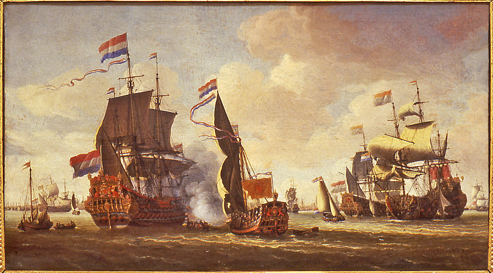

VOC
(Vereenigde Oost Indische Compagnie)

A. Latar Belakang
1. Tahun 1568
Perang kemerdekaan belanda dengan spanyol
2. Tahun 1595
Ekspedisi pertama Belanda ke Indonesia
3. Tahun 1598
Ekspedisi kedua ke Maluku
4. Tahun 1602
VOC didirikan
5. Tahun 1648
Belanda merdeka
6. Tahun 1799
Voc dibubarkan
B. Penjelasan
Pada tahun 1558, Belanda merupakan wilayah jajahan Spanyol, dimana Belanda merupakan daerah protestan dan Spanyol daerah katolik,
Raja Charles I Spanyol memerintahkan untuk menekan agama protestan di Belanda, kemudian ditentang dan diberi perlawanan oleh William van Orange,
agar lebih menekan lagi, Spanyol menutup hubungan perdagangan Belanda dengan Portugal, sehingga
Belanda mencari cara untuk mendapatkan rempah2 dan komoditas lainnya dengan menjelajah ke arah Timur sampai ke Indonesia dan pada saat sampai di Indonesia,
pemerintah Belanda mendirikan kongsi dagang yaitu VOC, agar dapat membantu keadaan ekonomi Belanda.
C. Hak Octrooi
Hak Octrooi adalah hak istimewa yang diberikan oleh pemerintah Belanda kepada VOC
Berikut adalah hak-hak istimewa VOC:
- Pembentukan tentara
-Pendirian benteng-benteng
-Membuat dan mengedarkan mata uang
-Memonopoli perdagangan
-Hak kehakiman
-Menyatakan perang dan perdamaian
-Membuat perjanjian dengan raja-raja
D.Kehancuran VOC
Pada tahun 1799, VOC dinyatakan bangkrut dengan meninggalkan hutang sebesar 136,7 juta gulden kepada pihak swasta, karena uang kas terkuras untuk perang dengan kerajaan2 dan banyak pegawai2 VOC yang korupsi.
D. Kebijakan
1. Verlichte Leverantie
Rakyat dipaksa untuk hanya menyerahkan hasil bumi kepada VOC
2. Contingenten
Kewajiban rakyat membayar pajak
3. Pelayaran Hongi
Pelayaran yang dilakukan VOC untuk mengawasi tindakan perdagangan
4. Ekstirpasi
Hak untuk memusnahkan hasil bumi yang berlebihan
5. Recognitie Pennigen
Pembayaran atas jasa-jasa yang diberikan kepada para bangsawan & sultan